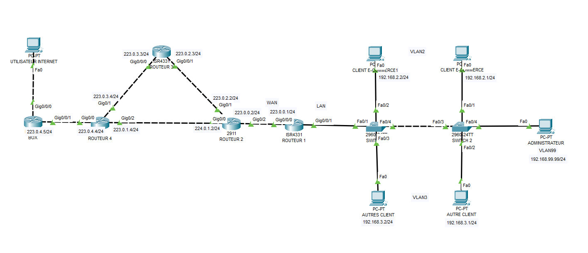

Au cours de mon année en BUT 1. J'ai étudié sur diffèrent projet touchant autant les réseaux informatiques, l'un de mes projet de TP était l'installation de sous-réseaux avec l'application Packet Tracer, qui
nous permet de créer et de configuré des réseaux. Il devait pouvoir communiquer entre eux grâce à différant ordinateurs.
Pour configurer ces ordinateur il faillé leurs mettre une adresse IP avec un masque mais aussi une Gateway qui est une
porte de sorti pour qu'ils puisent communiquer.

Pour configuré ces ordinateurs et routeurs j'ai du créer des sous-réseaux avec une adresse IP donné qui était en
192.168.1.0/24 en trois sous adresse. Pour cela j'ai du modifié sous masque qui était en /24 en /26. cette modification
ma permit de créer 4 sous-réseaux avec cette adresse IP.
Cela ma apporté d'être rigoureux et organiser dans mon travail
car l'on doit d'abord faire un plan d'adressage pour ne pas se trompé lors de la configuration des ordinateurs.
Grace a cela j'ai pu éviter des nombreuse erreur.